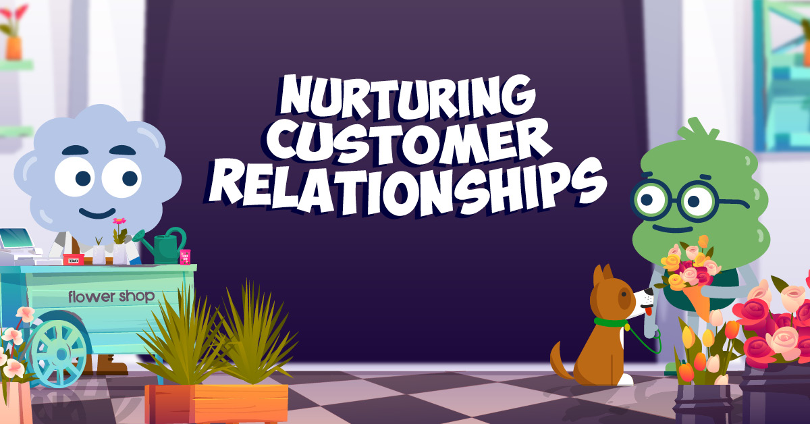
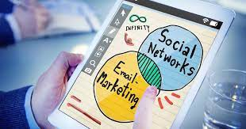

Introducing the Email Syntax Tool: Simplifying Email Syntax Checking
1) In today's digital world, email communication plays a crucial role in our personal and professional lives. Whether it's for sending important business messages, connecting with friends and family, or subscribing to newsletters, having a valid and properly formatted email address is essential. However, ensuring the accuracy and correctness of email addresses can be a challenging task. That's where the Email Syntax Tool comes to the rescue.
2) The Email Syntax Tool is a powerful online utility designed to simplify the process of email validation and syntax checking. With its user-friendly interface and advanced functionality, this tool offers a reliable solution for verifying the correctness of email addresses, identifying potential errors, and ensuring the smooth delivery of emails.
3) One of the primary features of the Email Syntax Tool is its ability to validate the syntax of an email address. When you enter an email address into the tool, it instantly examines the structure of the address, checking for common errors such as missing "@" symbols, incorrect domain names, or invalid characters. This feature helps you identify and rectify any syntax mistakes, ensuring that your email addresses are correctly formatted and comply with the standard email conventions.
4) Moreover, the Email Syntax Tool goes beyond syntax checking by performing a comprehensive validation process. It connects to the recipient's mail server to simulate the email delivery process, checking if the specified domain exists and if the address is valid. This thorough validation process significantly reduces the likelihood of encountering bounced or undeliverable emails.
5) The tool also provides insightful feedback and suggestions to assist you in resolving any issues found during the validation process. It offers actionable recommendations on how to correct errors, guiding you through the steps to ensure your email addresses are accurate and functional. This feature is particularly useful for businesses and marketers who rely on email marketing campaigns, as it helps maintain a clean and up-to-date email list, minimizing the chances of your emails being marked as spam or blocked.
The Pitfalls of Invalid Email Addresses
Sending emails to invalid addresses can have detrimental effects on your overall email deliverability.
Here are a few reasons why:
1) Bounce Rates and Reputation Damage: High bounce rates due to invalid email addresses can harm your sender reputation. Internet Service Providers (ISPs) closely monitor bounce rates, and consistently high bounce rates can result in your emails being flagged as spam or even blocking your sender domain.
2) Wasted Resources: Sending emails to non-existent addresses consumes valuable resources, including bandwidth, server capacity, and email service provider fees. By verifying email addresses before sending, you can significantly reduce wasted resources.
Security and Privacy of Email Verification
Security and privacy are of utmost importance when dealing with sensitive information such as email addresses. The Email Syntax Tool prioritizes data protection, employing state-of-the-art encryption measures to ensure the confidentiality of the email addresses entered into the tool. You can have peace of mind knowing that your data is handled securely and is never shared with third parties.
Maintaining Sender Reputation
One of the key reasons why email verification is vital is its impact on your sender reputation. Email service providers (ESPs) closely monitor the sending practices of marketers to determine whether their emails are legitimate or spam. High bounce rates, spam complaints, and low engagement can harm your sender reputation, resulting in your emails being flagged or sent to the recipients' spam folders. By verifying your email list, you can identify and remove invalid or inactive addresses, minimizing bounce rates and maintaining a positive sender reputation
Safeguarding Digital Communication in the Modern Era
In an era dominated by digital communication, email has emerged as a fundamental tool for both personal and professional correspondence. However, with the prevalence of cyber threats and the increasing sophistication of online fraud, ensuring the security of our email communications has become more crucial than ever. This article explores the significance of email verification, highlighting its role in safeguarding our digital interactions and protecting us from malicious actors.
The Growing Need for Email Verification
As technology continues to advance, so do the methods employed by cybercriminals. Phishing scams, email spoofing, and identity theft have become prevalent issues in the digital landscape, causing substantial financial losses and compromising sensitive data. Email verification serves as a proactive measure to combat these threats by confirming the legitimacy of email senders and recipients. By verifying email addresses, we can establish trust and ensure that our communications remain secure, protecting ourselves and our organizations from potential harm.
1. Confirming Identity and Preventing Fraud
One of the primary reasons for email verification is to confirm the identity of both the sender and the recipient. Verifying email addresses provides an added layer of security, ensuring that the individuals or organizations we are communicating with are genuine and trustworthy. This practice is crucial in mitigating the risk of falling victim to fraudulent activities, such as phishing scams. These deceptive tactics often involve the impersonation of reputable entities to deceive users into sharing confidential information or gaining unauthorized access to personal accounts. By implementing email verification, we establish a safeguard against such malicious endeavors and protect ourselves from potential financial and reputational damage.
2. Ensuring Deliverability and Reducing Bounces
Another key benefit of email verification is its impact on message deliverability. Invalid or mistyped email addresses can lead to email bounces, where messages fail to reach their intended recipients. By verifying email addresses, we can identify and correct errors, ensuring that our messages are successfully delivered. This is particularly crucial for businesses and organizations that heavily rely on email communication for customer engagement, marketing campaigns, and critical correspondence. Maintaining a clean and verified email list helps optimize the overall communication strategy, increasing the likelihood of reaching the intended audience and fostering stronger relationships with customers and partners.
3. Building Trust and Credibility
Trust is a vital component of any successful communication endeavor, and email verification plays a significant role in establishing trust and credibility. When recipients receive emails from verified sources, they are more likely to trust the content and take appropriate actions. Whether it's an important announcement, a promotional offer, or a request for collaboration, recipients are more inclined to engage with emails that come from verified and trusted sources. By prioritizing email verification, individuals and organizations can enhance their reputation, establish themselves as reliable communicators, and foster stronger relationships with their audience.
4. Conclusion
In an increasingly digital and interconnected world, email verification has become a crucial practice for safeguarding our communication channels. By confirming identities, preventing fraud, enhancing security and privacy, ensuring message deliverability, and building trust and credibility, email verification serves as a powerful tool in maintaining a secure and reliable digital environment. As individuals, businesses, and society as a whole, it is imperative that we prioritize email verification to protect our privacy, thwart cyber threats, and foster effective and trustworthy digital communication.
By - RAGHAV KHANDELWAL
Building an Effective Email List: Strategies for Growing Your Subscribers
INTRODUCTION
In the world of digital marketing, building an email list is a crucial step towards establishing a strong and engaged audience base. An effective email list allows you to directly connect with your target market, nurture relationships, and drive conversions. However, growing your subscriber list requires a well-planned strategy and consistent effort. In this blog post, we will explore powerful strategies to help you build an effective email list and maximize your subscribers' engagement.
1. Create Valuable Content and Lead Magnets:
To entice visitors to join your email list, offer valuable content and lead magnets. Create high-quality blog posts, guides, e-books, or templates that address your audience's pain points. Provide these resources in exchange for their email addresses. Ensure that the content is relevant, informative, and provides a clear benefit to your potential subscribers.
2. Optimize Sign-Up Forms:
Placement and design of your sign-up forms play a crucial role in converting visitors into subscribers. Strategically place forms on your website, blog sidebar, landing pages, and at the end of valuable content. Keep the forms simple, with minimal required fields. Test different form placements, sizes, and colors to optimize conversions. Additionally, consider using pop-up or slide-in forms with a clear call-to-action to grab visitors attention.
3. Offer Exclusive Incentives:
Everyone loves exclusivity. Offer special incentives to your subscribers to make them feel valued. Provide exclusive discounts, early access to new products or services, or insider information relevant to your niche. These incentives create a sense of privilege, making people more likely to join your email list and remain engaged with your content.
4. Leverage Social Media Channels:
Tap into the power of social media to expand your reach and attract potential subscribers. Promote your lead magnets and valuable content on platforms such as Facebook, Twitter, Instagram, and LinkedIn. Encourage your social media followers to join your email list by highlighting the unique benefits they will receive. Engage with your audience, respond to their comments, and create a sense of community to build trust and increase sign-ups.
5.Optimize for Mobile Devices
With the increasing use of smartphones, it is crucial to optimize your email sign-up process for mobile devices. Ensure that your forms and landing pages are mobile-friendly and load quickly. Simplify the input fields and use responsive designs to provide a seamless experience for mobile users. Frustration-free mobile sign-up experiences will significantly improve your conversion rates.
6. Guest Blogging and Collaborations:
Expand your reach by guest blogging on industry-related websites or collaborating with influencers and complementary businesses. Provide valuable content and include a call-to-action within your author bio or article itself, directing readers to join your email list. Partnering with established platforms and influencers exposes your brand to new audiences and increases the chances of attracting highly relevant subscribers.
Conclusion:
Building an effective email list is a fundamental aspect of successful digital marketing. By implementing these strategies and consistently providing value to your subscribers, you can nurture strong relationships, drive conversions, and ultimately grow your business. Remember to continuously monitor and refine your approach based on analytics and feedback to optimize your email list building efforts. Start implementing these strategies today and watch your subscriber base grow, paving the way for business success.
Remember, building a high-value email list takes time, patience, and ongoing effort. With the right strategies and consistent execution, you can steadily grow your subscriber base and reap the benefits of a highly engaged audience. Good luck with your email list building journey!
Crafting Engaging Email Content: Tips for Writing Compelling Emails
INTRODUCTION
Email marketing remains one of the most effective ways to connect with your audience, nurture relationships, and drive conversions. However, with inboxes flooded with messages, it's crucial to craft compelling email content that stands out and grabs the attention of your subscribers. In this blog post, we will explore valuable tips for writing engaging emails that captivate your audience and drive desired actions. Implement these strategies to enhance your email marketing efforts and maximize the potential of your campaigns.
1. Know Your Audience:
Before you start writing your email, take the time to understand your audience's needs, preferences, and pain points. Develop buyer personas and segment your email list based on demographics, interests, or purchase history. Tailor your content to address their specific challenges, desires, and motivations. By delivering targeted and relevant emails, you can establish a deeper connection with your subscribers and increase engagement
2. Craft Attention-Grabbing Subject Lines:
The subject line is your first opportunity to capture your subscribers' attention and entice them to open your email. Craft subject lines that are concise, intriguing, and personalized. Use power words, ask questions, or create a sense of urgency. A/B testing different subject lines can help you identify what resonates best with your audience and boosts open rates.
3. Personalize Your Emails:
Personalization is key to creating a meaningful connection with your subscribers. Address them by their name and leverage the data you have to personalize the content further. Segment your email list and tailor the email content based on their preferences, past purchases, or browsing behavior. Show that you understand their needs and provide relevant recommendations or offers. Personalized emails not only increase engagement but also foster a sense of loyalty and trust.
4. Write Compelling and Concise Copy:
When it comes to email content, less is often more. Keep your copy concise, using short paragraphs, bullet points, and clear headings. Write in a conversational tone that resonates with your audience. Focus on the benefits and value your subscribers will receive. Use storytelling techniques to engage and captivate readers, drawing them into your message. Incorporate a strong call-to-action (CTA) that compels them to take the desired action.
5. Use Eye-Catching Visuals:
Visual elements can significantly enhance the impact of your email content. Include relevant and eye-catching images, graphics, or videos to break up the text and make your emails visually appealing. Ensure that the visuals align with your brand and message, and optimize them for quick loading. Visuals not only grab attention but also make your emails more memorable and shareable.
6. Optimize for Mobile Devices:
With the majority of emails being read on mobile devices, it is essential to optimize your email content for mobile responsiveness. Use a responsive email design that adjusts to different screen sizes and ensure that your content is easily readable on smaller screens. Test your emails across various devices and email clients to ensure a seamless experience for mobile users.
7. Test and Analyze:
To continually improve your email content, test different elements and analyze the results. Conduct A/B tests on subject lines, CTAs, visuals, and even email layouts. Analyze metrics like open rates, click-through rates, and conversion rates to identify what resonates best with your audience. Use this data to refine your email content strategy and optimize future campaigns.
Conclusion:
Crafting engaging email content is an art that requires understanding your audience, personalization, and persuasive writing. By implementing these tips, you can create compelling emails that captivate your subscribers, drive engagement, and achieve your marketing goals. Remember to continually test, analyze, and refine your approach based on data and feedback. With consistent effort and a focus on delivering value, your email campaigns will become a powerfultool for nurturing relationships, generating leads, and driving conversions. Start implementing these strategies in your email marketing efforts today and watch as your engagement and success soar.
Remember, creating high-value email content is an ongoing process. Keep experimenting, learning from your audience, and adapting your approach to deliver emails that resonate with your subscribers. By consistently providing relevant and compelling content, you can build stronger connections, foster brand loyalty, and achieve remarkable results through your email marketing campaigns.
Designing Responsive Email Templates: Best Practices for Compatibility
INTRODUCTION
In the era of mobile devices and varying screen sizes, designing responsive email templates has become essential for effective email marketing. Responsive email templates adapt to different devices and screen resolutions, ensuring your emails are visually appealing and accessible to all recipients. In this blog post, we will explore best practices for designing responsive email templates that are compatible across multiple devices. By following these guidelines, you can enhance the user experience, improve engagement, and optimize your email marketing campaigns.
1. Start with a Mobile-First Approach:
With the majority of emails being opened on mobile devices, it's crucial to adopt a mobile-first mindset when designing your email templates. Begin by focusing on creating a visually appealing and functional layout for mobile screens. Keep in mind that mobile screens are smaller, so prioritize concise content, legible fonts, and large, tappable buttons.
2. Use a Responsive Email Template Framework:
To simplify the process of creating responsive email templates, consider using a responsive email template framework. These frameworks provide pre-built code structures and CSS styles that are optimized for compatibility across various devices and email clients. Some popular frameworks include Foundation for Emails, Cerberus, and MJML. These frameworks save time, ensure consistency, and reduce the chances of compatibility issues.
3. Keep the Design Simple and Clean:
Simplicity is key when it comes to responsive email templates. Avoid cluttered designs and excessive use of images or graphics. Keep the layout clean, with a clear hierarchy of information. Use a single-column layout for better compatibility on mobile devices. Minimalistic designs not only enhance readability but also reduce the chances of rendering issues across different email clients.
4. Optimize Images and Graphics:
To ensure compatibility and faster loading times, optimize your images and graphics for email. Compress images to reduce file sizes without compromising quality. Use HTML and CSS techniques instead of image-based text whenever possible. This approach ensures that your content remains visible even if images are blocked or fail to load.
5. Use Scalable Fonts and Clear CTAs:
Select fonts that are easily readable on different screen sizes. Stick to web-safe fonts to ensure consistent rendering across various email clients. Use font sizes that are legible on mobile devices without requiring zooming. Additionally, make your call-to-action (CTA) buttons prominent, with a size and spacing that allows for easy tapping on touchscreen devices.
6. Test Across Multiple Devices and Email Clients:
Before sending out your emails, thoroughly test them across various devices, email clients, and operating systems. Use testing tools like Litmus or Email on Acid to preview your emails and identify any compatibility issues. Pay attention to how your templates render on different screens, including desktop, mobile, and tablets. Testing ensures that your emails appear as intended and deliver a consistent experience to all recipients.
7. Regularly Update and Improve:
Technology and email client capabilities are constantly evolving. Stay updated with the latest best practices and changes in email standards. Regularly review and optimize your email templates based on performance metrics and user feedback. Continuously monitor compatibility across devices and email clients and make necessary adjustments to ensure your emails always look great.
Conclusion:
Designing responsive email templates is crucial for delivering a seamless user experience and maximizing the effectiveness of your email marketing campaigns. By following these best practices, you can ensure compatibility across multiple devices and email clients, enhance readability, and engage your audience effectively. Remember to prioritize a mobile-first approach, keep the design clean and simple, optimize images and fonts, and test thoroughly before sending out your emails. With responsive email templates, you'll be well-equipped to create visually appealing and impactful email campaigns that drive results.
Take the time to invest in designing responsive email templates that prioritize compatibility and user experience. With a thoughtful and optimized design, you'll enhance engagement, increase conversions, and make the most of your email marketing efforts
Email Automation 101: Streamlining Your Campaigns for Success
INTRODUCTION
Email automation has revolutionized the way businesses engage with their audience, enabling personalized and targeted communication at scale. By leveraging automation tools, you can streamline your email campaigns, save time, and deliver relevant content that drives conversions. In this blog post, we will explore the fundamentals of email automation and provide valuable insights on how to streamline your campaigns for success. By implementing these strategies, you can enhance efficiency, boost engagement, and achieve your marketing goals.
1. Understand Your Audience and Goals:
Before diving into email automation, it's crucial to understand your audience and define your goals. Segment your audience based on demographics, interests, and behavior. This allows you to create tailored email campaigns that resonate with specific segments. Clearly define your objectives, whether it's lead generation, customer retention, or product promotions. Aligning your automation strategy with your audience and goals sets the foundation for effective campaigns.
2. Choose the Right Email Automation Tool:
Selecting the right email automation tool is essential for success. Look for a platform that offers robust features, ease of use, and integration capabilities. Popular options include Mailchimp, ActiveCampaign, and HubSpot. Consider your budget, scalability, and specific requirements when making your choice. The right tool will provide a user-friendly interface, automation workflows, and analytics to optimize your campaigns.
3. Map Out Your Customer Journey:
To effectively streamline your email campaigns, map out your customer journey and identify touchpoints where automation can add value. From welcome emails to abandoned cart reminders and post-purchase follow-ups, visualize the different stages of the customer lifecycle. Determine the appropriate triggers and actions for each stage, allowing you to send timely, relevant messages to your subscribers.
4. Create Engaging Email Content:
Compelling email content is essential for successful automation. Craft personalized and engaging emails that resonate with your audience. Use segmentation and dynamic content to deliver targeted messages based on subscriber preferences and behavior. Incorporate persuasive copy, eye-catching visuals, and clear calls-to-action (CTAs) to drive engagement and conversions. Test different subject lines, layouts, and content variations to optimize your emails' performance.
5. Implement Effective Workflows:
Automation workflows are the backbone of successful email campaigns. These workflows are a series of triggers, conditions, and actions that automate the sending of emails based on subscriber behavior or predefined events. Create workflows that align with your customer journey, ensuring a seamless and personalized experience. Examples of effective workflows include onboarding series, lead nurturing campaigns, and re-engagement sequences.
6. Personalize and Segment Your Emails:
Personalization and segmentation are key to driving engagement and conversions. Leverage subscriber data to personalize your emails with dynamic content, including their name, recent purchases, or browsing history. Segment your audience based on demographics, interests, or engagement level to deliver tailored content that resonates with each group. Personalized and segmented emails create a sense of relevance and increase the likelihood of subscriber engagement.
7.Monitor, Analyze, and Optimize
Continuously monitor and analyze the performance of your automated email campaigns. Track key metrics such as open rates, click-through rates, and conversion rates. Use A/B testing to experiment with different elements, such as subject lines, CTAs, or email content variations. Leverage the insights gained to optimize your campaigns, refine your automation workflows, and improve your overall email marketing strategy.
Conclusion:
Email automation is a powerful tool for streamlining your email campaigns and driving meaningful engagement. By understanding your audience, selecting the right automation tool, and mapping out your customer journey, you can deliver personalized and timely content that resonates with your subscribers. Create engaging email content, implement effective workflows, and leverage personalization and segmentation to enhance the user experience. Regularly monitor, analyze, and optimize your campaigns to ensure continued success.

Email Automation 101: Streamlining Your Campaigns for Success
INTRODUCTION
Building strong customer relationships is vital for the long-term success of any business. Engaged subscribers are more likely to become loyal customers, advocates for your brand, and contribute to your bottom line. Nurturing customer relationships involves consistently delivering value, personalized experiences, and meaningful interactions. In this blog post, we will explore effective strategies to keep your subscribers engaged and foster lasting connections. By implementing these practices, you can cultivate strong customer relationships that drive loyalty and growth.
1. Deliver Relevant and Valuable Content:
One of the most crucial aspects of engaging subscribers is consistently providing relevant and valuable content. Understand your audience's interests, pain points, and needs. Tailor your content to address these specific areas, whether it's through educational articles, industry insights, or helpful tips. Keep your content fresh, informative, and engaging to ensure continued interest and interaction.
2.Segment Your Audience for Personalization:
Personalization is key to making your subscribers feel valued and understood. Segment your audience based on demographics, purchase history, behavior, or preferences. Use this data to deliver personalized emails that cater to their specific interests and needs. Craft tailored offers, recommendations, and experiences that resonate with each segment. Personalization enhances engagement and creates a sense of exclusivity.
3. Implement Drip Campaigns and Automation:
Drip campaigns and automation allow you to nurture customer relationships at scale. Develop a series of automated emails that are triggered by specific actions or events, such as welcome emails, onboarding sequences, or birthday messages. These campaigns provide timely and relevant information, guiding subscribers through their journey with your brand. Automation saves time while maintaining personalized communication.
4. Encourage Two-Way Communication:
Engagement is a two-way street. Encourage your subscribers to actively participate and engage with your brand. Include clear calls-to-action (CTAs) in your emails that prompt them to reply, leave comments, or share feedback. Actively respond to their inquiries, comments, and suggestions. By fostering open communication channels, you demonstrate that their opinions and experiences matter, fostering a sense of connection and loyalty.
5. Offer Exclusive Benefits and Rewards:
Make your subscribers feel special by providing exclusive benefits and rewards. Offer them early access to new products or services, exclusive discounts, or loyalty programs. Create a sense of exclusivity and privilege, making them feel like valued members of your community. These incentives not only keep subscribers engaged but also encourage repeat purchases and advocacy.
6. Utilize Social Media Engagement:
Extend your engagement efforts beyond email by leveraging social media platforms. Encourage subscribers to follow your social media accounts and actively engage with your content. Pose questions, run polls, and host interactive sessions to stimulate conversations and gather feedback. Engaging with your subscribers on social media creates a multi-channel experience and strengthens the overall relationship.
7.Regularly Analyze and Optimize Your Efforts:
Continuously monitor and analyze engagement metrics to assess the effectiveness of your strategies. Track open rates, click-through rates, conversion rates, and overall engagement levels. Use this data to identify trends, preferences, and areas for improvement. Optimize your email content, personalization tactics, and communication strategies based on these insights to continually enhance subscriber engagement.
Conclusion:
Nurturing customer relationships is vital for sustained business success. By delivering relevant content, personalizing experiences, and fostering open communication, you can keep your subscribers engaged and connected to your brand. Implementing drip campaigns, offering exclusive benefits, and leveraging social media further enhance engagement levels. Regularly analyze your efforts, optimize your strategies, and adapt to evolving customer needs. By prioritizing customer engagement, you can build lasting relationships that drive loyalty, advocacy, and business growth.
Boosting Open Rates: Strategies to Increase Email Engagement
INTRODUCTION
In the world of email marketing, getting your subscribers to open your emails is the first critical step towards successful engagement. A high open rate indicates that your emails are capturing attention and resonating with your audience. However, increasing email open rates requires a well-planned strategy and continuous optimization. In this blog post, we will explore effective strategies to boost open rates and maximize email engagement. By implementing these strategies, you can increase the chances of your emails being opened, read, and acted upon.
1. Craft Compelling Subject Lines:
The subject line is the gateway to your email. Create attention-grabbing subject lines that pique curiosity, create a sense of urgency, or offer clear value. Experiment with different tactics, such as using numbers, asking questions, or including personalized elements. Keep subject lines concise, around 40-60 characters, to ensure they are fully visible in most email clients. A well-crafted subject line entices subscribers to open your email.
2.Personalize and Segment Your Emails:
Personalization is key to making your subscribers feel valued and increasing open rates. Address recipients by their name in the email salutation, and use dynamic content to provide a personalized experience. Additionally, segment your email list based on demographics, interests, or purchase history. Send targeted emails with content that is highly relevant to each segment, increasing the likelihood of opens and engagement.
3. Optimize Preview Text:
Preview text is the snippet of text that appears after the subject line in some email clients. Use this valuable space to provide additional context or a compelling teaser that complements your subject line. Craft engaging preview text that encourages recipients to open the email and discover more.
4. Experiment with Send Times:
Timing plays a crucial role in email open rates. Test different send times to determine when your audience is most responsive. Consider factors such as time zones, demographics, and industry norms. Some audience segments may be more likely to open emails during specific days of the week or times of the day. Use A/B testing to experiment with different send times and optimize your email delivery for maximum impact.
5. Optimize for Mobile Devices:
With the majority of emails being opened on mobile devices, it's essential to optimize your emails for mobile responsiveness. Ensure that your emails are mobile-friendly and display properly on different screen sizes. Use a responsive email design, keep paragraphs and sentences short, and use clear and legible fonts. Mobile-optimized emails increase the chances of recipients opening and engaging with your content.
6.Maintain Email List Hygiene:
Maintaining a clean and engaged email list is crucial for boosting open rates. Regularly remove inactive subscribers or those who haven't engaged with your emails in a long time. An unengaged audience can negatively impact your deliverability and open rates. Consider re-engagement campaigns to win back inactive subscribers before removing them from your list.
7.Continuously Monitor and Analyze:
Regularly monitor and analyze your email performance metrics to gain insights into what is resonating with your audience. Track open rates, click-through rates, and conversions to understand which emails are driving engagement. Use this data to refine your email content, subject lines, and segmentation strategies. By continuously analyzing and optimizing your email campaigns, you can increase open rates over time.
Conclusion:
Boosting email open rates is a crucial step towards increasing engagement and driving desired actions. By crafting compelling subject lines, personalizing your emails, and optimizing for mobile devices, you can increase the chances of your emails being opened and read. Experiment with send times, maintain email list hygiene, and continuously analyze performance to refine your strategies. Remember, consistently delivering valuable and relevant content is key to building trust and maintaining high open rates. Implement these strategies to maximize email engagement and achieve greater successin your email marketing efforts.
A/B Testing in Email Marketing: Optimizing Your Campaigns
INTRODUCTION
In the world of email marketing, staying ahead of the competition requires continuous improvement and optimization. A/B testing, also known as split testing, is a powerful technique that allows you to compare different elements of your email campaigns and make data-driven decisions. By conducting A/B tests, you can optimize your email marketing efforts, increase open and click-through rates, and ultimately drive better results. In this blog post, we will explore the importance of A/B testing in email marketing and provide valuable insights on how to conduct successful tests to optimize your campaigns.
1. Define Your Testing Goals:
Before you start A/B testing, clearly define your testing goals. Identify the specific metrics you want to improve, such as open rates, click-through rates, or conversions. Establish a baseline to measure against, so you can track the impact of your tests accurately. Clear goals provide focus and direction to your testing efforts.
2.Determine Testable Elements:
Identify the elements you want to test in your email campaigns. Common elements to test include subject lines, preheader text, email content, call-to-action (CTA) buttons, visuals, and sender names. Select one element to test at a time, ensuring you can isolate and measure the impact of that specific variable.
3.Create Variations:
Develop multiple versions of your email, each with a different variation of the element you want to test. For example, if you are testing subject lines, create two or more subject lines to compare. Ensure that your variations are distinct enough to provide meaningful results. Avoid making too many changes at once, as it can make it difficult to pinpoint the exact reason for any performance differences.
4. Split Your Audience:
Randomly divide your email list into equal segments. Send each variation to a separate segment of your audience. It's important to ensure that the segments are large enough to yield statistically significant results. Aim for a sample size that provides confidence in the outcome of your test.
5. Monitor and Analyze Results:
Track and measure the performance of each variation using relevant metrics. Monitor open rates, click-through rates, conversions, or any other key performance indicators (KPIs) you defined earlier. Analyze the results to determine which variation performed better. Statistical significance calculators can help you determine if the results are statistically significant or if they occurred by chance.
6.Implement the Winning Variation:
Once you identify the winning variation, implement it in your email campaign. Use the insights gained from your A/B test to optimize future campaigns. Keep in mind that testing is an ongoing process, and there is always room for improvement. Continuously iterate and refine your email marketing strategies based on the results of your tests
7.Test One Element at a Time:
To ensure accurate and reliable results, test only one element at a time. This allows you to isolate the impact of that specific element on your email performance. Testing multiple elements simultaneously can make it challenging to determine which element contributed to the observed changes in performance.
Conclusion:
A/B testing is a valuable technique in email marketing that empowers you to make data-driven decisions and optimize your campaigns for better results. By defining your testing goals, selecting testable elements, creating variations, and analyzing the results, you can uncover insights that drive higher engagement and conversions. Implement the winning variations in your campaigns, and continue testing to refine your strategies. A/B testing is a continuous process that allows you to stay ahead of the competition and consistently improve your email marketing efforts. Embrace A/B testing as a powerful tool and unlock the potential of your email campaigns.
Creating Effective Call-to-Action Buttons in Emails
INTRODUCTION
In the world of email marketing, the call-to-action (CTA) button serves as a gateway to conversions. A well-designed and compelling CTA button can significantly impact click-through rates and drive desired actions from your subscribers. Creating effective CTAs in emails requires careful consideration of design, placement, copy, and overall strategy. In this blog post, we will explore strategies to help you create powerful and engaging call-to-action buttons that inspire action and optimize your email marketing campaigns.
1. Use Action-Oriented Copy:
The copy of your CTA button should be clear, concise, and action-oriented. Use action verbs that encourage immediate response, such as "Shop Now," "Download," "Register," or "Get Started." Keep the text short and compelling, creating a sense of urgency or highlighting the value of taking the desired action. Use language that resonates with your audience and aligns with your brand voice.
2.Make it Visually Distinct:
Your CTA button should stand out visually within the email. Use contrasting colors that catch the recipient's attention and create a sense of urgency or importance. Make sure the button is large enough to be easily tappable on mobile devices. Rounded corners, drop shadows, or other visual effects can enhance the button's prominence. Avoid cluttering the surrounding area to ensure the CTA button remains the focal point.
3.Ensure Readability:
The text on your CTA button should be easily readable. Choose a font size and style that is legible across different devices and screen sizes. Opt for high contrast between the text color and the background color of the button to enhance readability. Test your CTA button's visibility on both desktop and mobile devices to ensure it maintains readability across various platforms.
4. Place Strategically:
The placement of your CTA button within the email can greatly impact its effectiveness. Consider placing the CTA button above the fold, where it's immediately visible without requiring scrolling. Position it in proximity to relevant content or information that supports the call to action. Experiment with different placements to find what works best for your audience and email design.
5. Utilize White Space:
Surrounding your CTA button with ample white space helps draw attention to it and makes it stand out. Avoid cluttered designs or distractions around the CTA button. White space creates a visual contrast and enhances the overall readability and impact of your CTA button.
6.Create a Sense of Urgency:
To encourage immediate action, create a sense of urgency in your CTA copy. Use phrases like "Limited Time Offer," "Only 24 Hours Left," or "Act Now" to evoke a sense of urgency and exclusivity. Incorporate countdown timers or offer time-limited incentives to further drive urgency. Urgency can compel subscribers to take action promptly, increasing click-through rates.
7.Test and Analyze:
A/B testing is crucial for optimizing your CTA buttons. Test different variations of your CTA button, including colors, text, size, placement, and surrounding elements. Measure click-through rates, conversion rates, and overall engagement to determine the most effective design. Analyze the data to understand which variations resonate best with your audience, and continuously refine your CTA buttons based on the insights gained.
Conclusion:
Creating effective call-to-action buttons is essential for driving conversions in your email marketing campaigns. By using action-oriented copy, making them visually distinct, ensuring readability, strategic placement, utilizing white space, creating a sense of urgency, and testing different variations, you can optimize the performance of your CTAs. Remember to continuously test, analyze, and refine your CTA buttons based on user behavior and feedback. With well-crafted CTAs, you can inspire action, increase click-through rates, and maximize theimpact of your email marketing efforts. Implement these strategies in your email campaigns and watch as your call-to-action buttons become powerful drivers of engagement and conversions.
The Role of Email Newsletters in Content Marketing
INTRODUCTION
Email newsletters have remained a steadfast tool in content marketing strategies for businesses of all sizes. In the digital age, where information is abundant, email newsletters serve as a direct and personalized communication channel with your audience. They allow you to deliver valuable content, nurture relationships, and drive engagement. In this blog post, we will explore the role of email newsletters in content marketing and highlight their significance in building a successful online presence.
1. Building and Nurturing Relationships:
Email newsletters provide a unique opportunity to establish and nurture relationships with your audience. By consistently delivering valuable and relevant content to their inboxes, you create a sense of trust and reliability. Newsletters allow you to stay connected with your subscribers, providing updates, insights, and resources that help them solve their challenges and meet their needs. This regular interaction builds a strong bond with your audience, increasing brand loyalty and advocacy.
2. Showcasing Thought Leadership:
Email newsletters enable you to position yourself as a thought leader in your industry. By curating and sharing insightful content, industry trends, and expert opinions, you demonstrate your expertise and knowledge. Newsletters allow you to share your unique perspective and provide valuable insights to your subscribers. Over time, this establishes your brand as a trusted authority, elevating your credibility and influence within your niche.
3.Driving Traffic to Your Website:
The text on your CTA button should be easily readable. Choose a fonEmail newsletters serve as a powerful driver of website traffic. By featuring snippets of your latest blog posts, articles, or other content, you entice subscribers to click through to your website for further engagement. Including compelling headlines, enticing visuals, and clear calls-to-action in your newsletters encourages readers to explore your website, consume more content, and engage with your brand on a deeper level. Increased website traffic can lead to higher conversions and business growth.
4. Promoting Your Content and Offers:
Email newsletters provide an effective platform for promoting your content and offers. Whether it's new blog posts, e-books, webinars, or product launches, newsletters allow you to showcase your valuable assets directly to your subscribers. By strategically including links, visuals, and enticing descriptions, you can drive traffic to specific landing pages, encouraging conversions and generating leads. Newsletters act as a gateway to your content ecosystem, ensuring that your audience stays informed and engaged with your brand.
5. Segmenting and Personalizing Communication:
One of the significant advantages of email newsletters is the ability to segment and personalize communication. By categorizing your subscribers based on demographics, interests, behavior, or engagement level, you can tailor your newsletters to their specific needs and preferences. Personalization creates a more meaningful and targeted experience, increasing the chances of engagement and conversion. Segmenting also allows you to send relevant offers and promotions to specific groups, maximizing the impact of your email campaigns.
6.Measuring and Analyzing Performance:
Email newsletters provide valuable insights through analytics, allowing you to measure and analyze their performance. Tracking metrics such as open rates, click-through rates, conversions, and subscriber engagement provides valuable feedback on the effectiveness of your content and campaign strategies. This data enables you to make data-driven decisions, optimize your newsletters, and refine your content marketing efforts over time.
7.Building a Community and Fostering Engagement:
Beyond delivering content, email newsletters play a pivotal role in building a community around your brand. By encouraging feedback, comments, and social media interactions, you foster engagement and create a space for dialogue. Engaging with your subscribers through newsletters can lead to valuable conversations, customer insights, and user-generated content. This sense of community strengthens the bond between your brand and your audience, amplifying the impact of your content marketing efforts.
Conclusion:
Email newsletters are a cornerstone of content marketing strategies, serving as a direct line of communication between your brand and your audience. By leveraging newsletters effectively, you can build and nurture relationships, showcase thought leadership, drive website traffic, promote your content and offers, segment and personalize communication, measure performance, and build a community around your brand. Incorporate newsletters into your content marketing strategy to enhance engagement, drive conversions, and establish a strong online presence. With strategic planning, valuable content, and data-driven optimization, email newsletters will continue to play a crucial role in your content marketing success.
Drip Campaigns 101: Engaging Subscribers at Every Stage
INTRODUCTION
Drip campaigns are a powerful tool in email marketing, allowing you to deliver targeted and personalized messages to your subscribers over time. By automating a series of emails based on specific triggers or actions, you can engage your audience at every stage of their customer journey. Drip campaigns enable you to nurture relationships, educate prospects, onboard new customers, and re-engage inactive subscribers. In this blog post, we will explore the fundamentals of drip campaigns and provide insights on how to create effective and engaging drip campaigns that drive results.
1. Understand Your Customer Journey:
Before setting up a drip campaign, it's crucial to understand your customer journey. Map out the various stages your subscribers go through, from initial awareness to conversion and beyond. Identify the key touchpoints and actions that indicate movement from one stage to another. This understanding will help you determine the right triggers and content for your drip campaign.
2. Define Your Goals:
Clearly define the goals of your drip campaign. Do you want to nurture leads, onboard new customers, re-engage inactive subscribers, or promote specific products or services? By defining your goals, you can align your drip campaign strategy with your desired outcomes and create relevant and impactful content.
3.Segment Your Audience:
Segmentation is key to delivering personalized and relevant content in your drip campaigns. Divide your audience into segments based on demographics, interests, behavior, or any other relevant criteria. This allows you to tailor your drip campaigns to specific groups, increasing the effectiveness and engagement of your emails.
4. Craft Compelling Content:
Creating compelling and valuable content is crucial for the success of your drip campaigns. Each email in your drip sequence should provide unique and relevant information that addresses the needs and pain points of your subscribers. Use a mix of educational content, helpful resources, case studies, testimonials, and product information to engage and nurture your audience. Personalize the content based on the segment's interests and preferences.
5. Determine Triggers and Timing:
Identify the triggers that will initiate your drip campaign. Triggers can be actions such as subscribing to your newsletter, downloading an e-book, making a purchase, or being inactive for a specific period. Determine the appropriate timing for each email in your sequence. Consider the time between emails, ensuring that you strike the right balance between staying top of mind and avoiding overwhelming your subscribers.
6. Test and Optimize:
A/B testing is crucial for optimizing your drip campaigns. Test different elements such as subject lines, email content, CTAs, and timing to identify what resonates best with your audience. Monitor open rates, click-through rates, and conversions to measure the effectiveness of your emails. Use the insights gained from testing to refine and optimize your drip campaigns over time.
7.Analyze and Iterate:
Regularly analyze the performance of your drip campaigns and iterate based on the data. Track key metrics and monitor the progression of subscribers through the campaign. Identify areas where engagement is high and areas where improvement is needed. Continuously refine your content, triggers, and timing to enhance the effectiveness and impact of your drip campaigns.
Conclusion:
Drip campaigns are a powerful tool for engaging subscribers at every stage of their customer journey. By understanding your customer journey, defining your goals, segmenting your audience, crafting compelling content, determining triggers and timing, testing, and analyzing performance, you can create effective and engaging drip campaigns that drive results. Implement these strategies in your email marketing efforts to nurture relationships, educate prospects, onboard customers, and re-engage inactive subscribers. With well-planned drip campaigns, you can deliver personalized and timely messages that lead to increased engagement, conversions, and business growth.

Integrating Email Marketing with Social Media: Best Practices
INTRODUCTION
Email marketing and social media are two powerful channels in a marketer's toolbox. While email allows for personalized, targeted communication, social media offers vast reach and engagement opportunities. Integrating these two channels can amplify your marketing efforts, expand your reach, and foster deeper connections with your audience. In this blog post, we will explore best practices for integrating email marketing with social media to maximize your marketing effectiveness and drive meaningful results.
1.Cross-Promote Your Channels:
Promote your social media channels within your email campaigns by including social media icons and links. Encourage your email subscribers to connect with you on social media platforms to stay updated, access exclusive content, and engage in conversations. Likewise, leverage your social media platforms to promote your email newsletters and encourage followers to subscribe. Cross-promotion enhances visibility, expands your audience, and encourages multi-channel engagement.
2.Incorporate Social Sharing Buttons:
Include social sharing buttons within your email campaigns to make it easy for recipients to share your content on their social media networks. By enabling one-click sharing, you can extend the reach of your emails beyond your subscriber list. Encourage subscribers to share your content with their network, fostering organic brand advocacy and generating new leads. Place social sharing buttons strategically within your emails to maximize visibility and engagement.
3.Leverage User-Generated Content:
Harness the power of user-generated content (UGC) by incorporating it into both your email and social media campaigns. Encourage subscribers to share their experiences, testimonials, or creative content related to your brand. Feature UGC in your email newsletters and showcase it on your social media channels. UGC not only adds authenticity and social proof but also fosters a sense of community and engagement among your audience.
4. Run Exclusive Social Media Contests:
Use your email list to promote exclusive social media contests and giveaways. Encourage subscribers to participate by following your social media accounts, sharing content, or tagging friends. Contests provide an opportunity to increase social media engagement, grow your following, and drive traffic to your website. Leverage your email list to kickstart these contests and create excitement among your subscribers.
5.Repurpose Email Content for Social Media:
Repurpose your email content for social media to maximize its reach and impact. Adapt snippets or key highlights from your newsletters as social media posts. Use visually appealing images or videos to catch attention and drive engagement. Provide a teaser or a link to the full content within your email, driving traffic back to your website or landing page. Repurposing content saves time while ensuring consistency across channels.
6.Segment and Target Social Ads:
Leverage your email subscriber data to create highly targeted social media advertising campaigns. Segment your email list based on demographics, interests, or engagement level and use these segments to refine your social media ad targeting. By reaching the right audience with relevant messaging, you can increase the effectiveness and ROI of your social media advertising efforts.
7.Listen and Engage on Social Media:
Monitor social media platforms for conversations and engagements related to your brand. Respond promptly to comments, mentions, and messages to foster engagement and build stronger relationships. Incorporate social media interactions into your email marketing by featuring user-generated content or highlighting customer stories in your newsletters. This integration strengthens the connection between your email subscribers and your social media community.
Conclusion:
Integrating email marketing with social media is a powerful strategy to enhance your marketing efforts and foster deeper engagement with your audience. By cross-promoting channels, incorporating social sharing buttons, leveraging user-generated content, running exclusive contests, repurposing email content, targeting social ads, and actively engaging on social media, you can create a seamless multi-channel experience that drives brand awareness, increases engagement, and generates meaningful results. Embrace the synergy between email marketing and social media to maximize your marketing impact and create a holistic brand experience for your audience.
Email List Cleaning: Why and How to Keep Your List Healthy
INTRODUCTION
Maintaining a healthy email list is essential for the success of your email marketing campaigns. An outdated or unengaged list can negatively impact your deliverability, open rates, and overall campaign performance. Email list cleaning, also known as list hygiene, is the process of removing inactive, unengaged, or invalid email addresses from your subscriber list. In this blog post, we will explore why email list cleaning is important and provide actionable steps to keep your list healthy and optimize your email marketing efforts.
1.Improve Deliverability and Engagement:
A clean email list improves your email deliverability, ensuring that your messages reach the intended recipients' inboxes rather than being flagged as spam. Internet service providers (ISPs) and email clients closely monitor engagement metrics, such as open rates and click-through rates, to determine the quality of your emails. By removing inactive or unengaged subscribers, you increase the engagement rate of your list, signaling to ISPs that your emails are valuable and relevant.
2.Maintain a Positive Sender Reputation:
A healthy email list helps maintain a positive sender reputation, which is crucial for successful email marketing. ISPs and spam filters assess sender reputation to determine whether to deliver emails to the inbox or divert them to the spam folder. High bounce rates, spam complaints, and low engagement can harm your reputation. Regularly cleaning your email list reduces the risk of sending emails to invalid or uninterested recipients, preserving your sender reputation.
3.Save Time and Resources:
Sending emails to inactive or uninterested subscribers wastes your valuable resources, including time, effort, and money. By cleaning your email list, you focus your marketing efforts on engaged and interested individuals who are more likely to convert and engage with your content. This targeted approach allows you to allocate your resources more effectively and achieve better results from your email marketing campaigns.
4. Enhance Audience Segmentation and Personalization:
A clean email list provides accurate data for audience segmentation and personalization. By removing inactive subscribers, you ensure that your segmentation efforts are based on engaged and relevant recipients. This allows for more accurate targeting and personalized messaging, increasing the chances of driving engagement and conversions. With a clean list, you can create more meaningful connections with your audience and deliver content that resonates.
5.Reduce Spam Complaints:
A high number of spam complaints can harm your email deliverability and sender reputation. By regularly cleaning your email list, you remove inactive or disinterested subscribers who are more likely to mark your emails as spam. Maintaining a low spam complaint rate demonstrates to ISPs that your emails are wanted and requested, improving the chances of your emails reaching the inbox.
6.Regularly Monitor Engagement Metrics:
Monitor key engagement metrics such as open rates, click-through rates, and conversion rates. Identify subscribers who consistently show low engagement over an extended period. Consider re-engagement campaigns to win them back or remove them from your list to maintain list health.
7. Regularly Clean Invalid Email Addresses:
Regularly run your email list through an email verification service to identify and remove invalid or undeliverable email addresses. These services check for syntax errors, misspellings, and other issues that can cause emails to bounce. Removing invalid email addresses improves your deliverability and keeps your list healthy.
8.Remove Inactive Subscribers:
Identify subscribers who haven't engaged with your emails for a defined period, typically six months to a year. Send re-engagement campaigns to prompt them to re-engage or unsubscribe if they are no longer interested. Removing inactive subscribers ensures that your list consists of engaged and interested recipients.
Conclusion:
Email list cleaning is a critical aspect of maintaining a healthy and effective email marketing strategy. By regularly cleaning your list, you improve deliverability, engagement, and sender reputation. A healthy list allows for accurate segmentation, personalization, and efficient resource allocation. Implement the best practices mentioned above to keep your email list healthy and optimize the impact of your email marketing campaigns. Embrace email list cleaning as an ongoing practice to maximize the success of your email marketing efforts.
Email Marketing for E-commerce: Strategies for Increased Sales
INTRODUCTION
Email marketing is a powerful tool for e-commerce businesses to drive sales, nurture customer relationships, and increase brand loyalty. With the ability to deliver personalized and targeted messages directly to customers' inboxes, email marketing allows you to engage with your audience at every stage of their buying journey. In this blog post, we will explore effective strategies for leveraging email marketing to boost sales and drive revenue for your e-commerce business.
1.Build a Quality Email List:
Start by building a quality email list of engaged and interested subscribers. Offer incentives such as exclusive discounts, freebies, or valuable content in exchange for email addresses. Ensure compliance with data protection regulations and obtain explicit consent from subscribers to receive emails from your business. Building a quality email list forms the foundation for effective email marketing campaigns.
2.Segment Your Audience:
Segmentation is key to delivering personalized and relevant content to your subscribers. Divide your email list into segments based on demographics, purchase history, browsing behavior, or engagement level. This allows you to tailor your email campaigns to specific customer groups, increasing the chances of delivering content that resonates with their needs and interests.
3.Send Personalized Product Recommendations:
Leverage customer data and purchase history to send personalized product recommendations to your subscribers. Use dynamic content and automation to deliver targeted recommendations based on their previous purchases or browsing behavior. Personalized recommendations can significantly increase engagement, click-through rates, and ultimately, sales.
4. Abandoned Cart Recovery:
Implement abandoned cart recovery emails to capture potential sales that were left unfinished. Send automated emails to remind customers of their abandoned carts and entice them to complete their purchase. Include compelling subject lines, attractive visuals, and clear call-to-action buttons to drive conversions. Offering incentives such as discounts or free shipping can further encourage customers to complete their purchase.
5.Promote Exclusive Discounts and Offers:
Reward your email subscribers with exclusive discounts, early access to sales, or limited-time offers. Create a sense of exclusivity and urgency, motivating them to take advantage of these special deals. Use eye-catching visuals and persuasive copy to highlight the value of the offer and drive conversions. Regularly communicate these promotions to keep your subscribers engaged and eager to make a purchase.
6.Nurture Customer Relationships:
Email marketing is not just about driving immediate sales; it's also about building long-term customer relationships. Engage your subscribers with valuable and informative content, such as educational blog posts, customer success stories, or industry insights. Provide helpful tips, tutorials, or product usage ideas to enhance the customer experience and foster loyalty. Nurturing customer relationships increases customer lifetime value and encourages repeat purchases.
7. Test and Optimize:
Continuously test and optimize your email campaigns to maximize their effectiveness. A/B test different elements such as subject lines, visuals, call-to-action buttons, and email copy to identify what resonates best with your audience. Analyze open rates, click-through rates, and conversion rates to gain insights into subscriber preferences. Use these insights to refine your email marketing strategies and improve overall performance.
Conclusion:
Email marketing is a powerful tool for e-commerce businesses to increase sales and foster customer loyalty. By building a quality email list, segmenting your audience, sending personalized recommendations, recovering abandoned carts, promoting exclusive discounts, nurturing customer relationships, and continuously optimizing your campaigns, you can drive revenue and achieve business growth. Implement these strategies in your e-commerce email marketing efforts to engage your audience, enhance the customer experience, and boost your sales in a highly competitive online marketplace. Embrace the potential of email marketing and watch as it becomes a valuable asset for your e-commerce business.
Email Segmentation Strategies for Targeted Campaigns
INTRODUCTION
Segmentation is a powerful technique in email marketing that allows you to deliver personalized and relevant content to your subscribers. By dividing your email list into distinct segments based on various criteria, you can create targeted campaigns that resonate with specific groups of recipients. Email segmentation increases engagement, click-through rates, and conversions, ultimately driving better results for your email marketing efforts. In this blog post, we will explore effective email segmentation strategies to help you create highly targeted campaigns that deliver value to your subscribers.
1.Demographic Segmentation:
Demographic segmentation involves dividing your email list based on demographic factors such as age, gender, location, or job title. This segmentation strategy allows you to tailor your email content to different demographics and deliver messages that are more relevant and relatable to each group. For example, you can send personalized offers to specific age groups or location-specific promotions to target customers in different regions.
2.Behavioral Segmentation:
Behavioral segmentation focuses on the actions and behaviors of your subscribers. By tracking their interactions with your emails, website, or previous purchases, you can create segments based on specific behaviors. For example, you can segment subscribers who have abandoned their carts, engaged with a particular product category, or shown interest in specific content. This enables you to send targeted emails that address their specific needs and preferences, increasing the chances of conversion.
3.Purchase History Segmentation:
Segmenting your email list based on purchase history allows you to deliver highly relevant and personalized recommendations and offers. By categorizing customers as first-time buyers, repeat customers, or loyal customers, you can create tailored email campaigns that nurture each segment appropriately. Send personalized product recommendations, exclusive discounts, or loyalty rewards to maximize customer engagement and encourage repeat purchases.
4. Engagement Segmentation:
Engagement segmentation involves dividing your email list based on subscribers' level of engagement. Identify subscribers who consistently open, click, or interact with your emails, and separate them into an engaged segment. Likewise, create a segment for subscribers who have shown low engagement or have been inactive for a specific period. This segmentation allows you to send targeted re-engagement campaigns to win back inactive subscribers or deliver exclusive content to highly engaged subscribers.
5.Customer Journey Segmentation:
Segmenting your email list based on the customer journey stage allows you to deliver the right content at the right time. Identify subscribers at different stages of the buying journey, such as leads, prospects, or existing customers, and tailor your email campaigns to their specific needs. Send educational content to leads, product recommendations to prospects, and loyalty rewards to existing customers. This segmentation strategy enhances the customer experience and increases the chances of conversion and retention.
6.Survey-Based Segmentation:
Engage your subscribers through surveys to gather valuable insights and preferences. Use the survey data to create segments based on specific preferences, interests, or challenges. This segmentation strategy allows you to send targeted content and offers that align with the unique needs and preferences of each segment. Surveys help you better understand your audience and deliver highly personalized and relevant content.
7. Dynamic Content and Personalization:
Leverage dynamic content and personalization to deliver highly customized emails to each segment. Use merge tags or dynamic content blocks to insert personalized information such as names, locations, or purchase history into your emails. Tailor the content and offers based on the characteristics and preferences of each segment. The more personalized your emails, the higher the engagement and conversion rates.
Conclusion:
Email segmentation is a powerful strategy to enhance the effectiveness of your email marketing campaigns. By segmenting your email list based on demographics, behavior, purchase history, engagement, customer journey, or survey data, you can deliver highly targeted and personalized content that resonates with your subscribers. Implement these email segmentation strategies to increase engagement, click-through rates, and conversions. Continuously analyze and refine your segments based on performance metrics to optimize your email marketing efforts. Embrace the power of email segmentation and watch as your targeted campaigns deliver value to your subscribers while driving significant results for your business.
Writing Irresistible Subject Lines for Higher Email Open Rates
INTRODUCTION
The subject line of an email is the first impression you make on your subscribers. It determines whether your email gets opened, ignored, or worse, sent to the spam folder. Writing irresistible subject lines is crucial for capturing the attention of your audience and driving higher open rates. In this blog post, we will explore effective strategies for crafting subject lines that entice recipients to open your emails and engage with your content.
1.Keep it Short and Concise:
Subject lines should be concise and to the point. Aim for a length of 40 to 50 characters to ensure they are fully visible in email clients and mobile devices. Use clear and compelling language that quickly grabs attention and conveys the value or benefit of opening the email.
2.Create a Sense of Urgency:
Incorporate a sense of urgency in your subject lines to motivate recipients to open your emails promptly. Use action-oriented words and phrases such as "Limited Time Offer," "Ending Soon," or "Last Chance." By emphasizing scarcity or time-sensitive opportunities, you create a sense of FOMO (fear of missing out) that compels subscribers to take immediate action.
3.Personalize and Segment:
Personalization is key to making your subject lines stand out. Use merge tags to include the recipient's name or location in the subject line. Additionally, segment your email list to deliver tailored content and offers to specific groups. By addressing subscribers individually and sending relevant content, you increase the chances of capturing their attention and driving higher open rates.
4. Spark Curiosity:
Curiosity is a powerful motivator. Craft subject lines that pique subscribers' curiosity and make them curious to learn more. Use compelling and intriguing statements, questions, or teasers that leave recipients wanting to know what's inside the email. However, be careful not to be misleading or use clickbait tactics that do not deliver on the promise made in the subject line.
5.Highlight Benefits or Offers:
Clearly communicate the value, benefits, or offers within your subject lines. Let subscribers know what they can gain by opening your email. Whether it's a special discount, valuable content, or exclusive access, emphasize the benefit or reward they will receive. Clearly state the value proposition to entice subscribers to open the email and explore further.
6.Use Emotion and Power Words:
Emotionally charged subject lines can make a strong impact. Tap into emotions that resonate with your audience, such as excitement, curiosity, or urgency. Use power words that evoke strong emotions or create a sense of anticipation. Experiment with different emotional triggers and power words to see what resonates best with your subscribers.
7. Test and Analyze:
A/B testing is crucial for optimizing your subject lines. Test different variations to identify what resonates best with your audience. Experiment with different lengths, personalization, wording, and strategies. Monitor open rates, click-through rates, and conversions to measure the effectiveness of your subject lines. Analyze the data and learn from the results to continuously refine and improve your subject line strategies.
Conclusion:
Crafting irresistible subject lines is a fundamental aspect of successful email marketing. By keeping your subject lines short and concise, creating a sense of urgency, personalizing and segmenting, sparking curiosity, highlighting benefits or offers, using emotion and power words, and testing and analyzing, you can increase email open rates and engage your audience effectively. Experiment with different strategies, tailor your subject lines to your specific audience, and track the results. Embrace the art of writing compelling subject lines, and watch as your email open rates soar, leading to increased engagement and conversions for your email marketing campaigns.